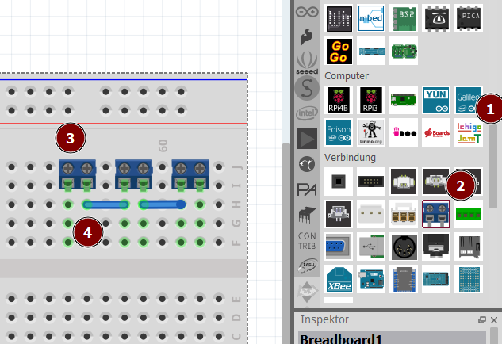
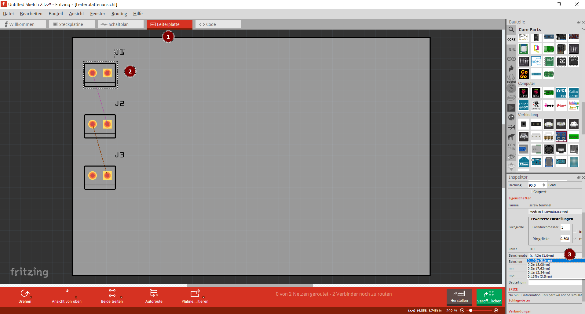

Wir entwickeln eine einfache Leiterplatte, mit der zwei Batteriekästen hintereinandergeschaltet werden können.
Entwurf auf dem virtuellen Steckbrett

Scrolle in den Bauteilen bis zur Rubrik Verbindung herunter.
Wähle einen Schraubverbinder und ziehe ihn auf das Steckbrett.
Füge zwei weitere Verbinder hinzu - du kannst auch mit copy-paste arbeiten (Strg C, Strg V).
Verbinde die Anschlüsse mit Kabeln, die du aus den Steckrett-Anschlüssen zur Seite ziehst.
Kontrolle in der Schaltplan-Ansicht
Überprüfe, ob die Verbindungen passen:
Design der Leiterplatte

Wechsele in die Leiterplatten-Ansicht:
Markiere einen Schraubverbinder
Überprüfe, on der passender Beinchenabstand eingestellt ist: 5 mm
Wähle im Menü Bauteil den Punkt Bauteilbeschriftung ausblenden.
Wiederhole dies für alle Schraubverbinder.
(Mit gedrückter Strg-Taste kannst du auch mehrere gleichzeitg markieren.)
Leiterplatte in CNC-System selbst erstellen
Software
Neben Fritzing sind noch zwei Programme nötig:
Flatcam: Wandelt die Gerber-Dateien aus Fritzing in GCode-Dateien um, mit denen die Fräse gesteuert werden kann.
Die Software ist leider schon sehr alt und die Installation scheitert an veralteten Python-Bibliotheken, die nicht mehr geladen werden können.
Unter https://drive.google.com/drive/folders/1sCBYOjP_K2XKYgDagDPQqvY4xDjRxZQf kann eine Installationsdatei für Windows heruntergeladen werden.